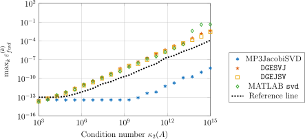
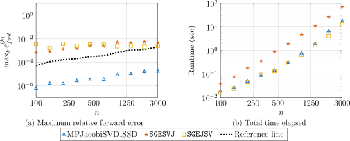

Computing accurate singular values using a mixed-precision one-sided Jacobi algorithm
Françoise Tisseur, Marcus Webb, and I have uploaded to the arXiv our paper "Computing accurate singular values using a mixed-precision one-sided Jacobi algorithm". It extends the mixed-precision preconditioning of our earlier work on computing accurate eigenvalues to the SVD of a general matrix. MATLAB code is on GitHub.
The one-sided Jacobi algorithm
The one-sided Jacobi algorithm applied to \(A\) is mathematically equivalent to the Jacobi eigenvalue algorithm applied to \(A^{T}A\), which we describe as two-sided. Throughout, \(A \in \mathbb{R}^{m\times n}\) is a full-rank matrix with \(m \ge n\). Define the one-sided scaled condition number
\[\kappa_{2}^{D}(A) = \kappa_{2}(AD), \qquad D = \mathrm{diag}(\|a_{j}\|_{2}^{-1}),\]with \(a_{j}\) the \(j\)th column of \(A\). Demmel and Veselić showed that the accuracy of the algorithm rests on its stopping criterion. If the iteration stops when
\[|a_{i}^{T}a_{j}| \le \mathrm{tol}\cdot\|a_{i}\|_{2}\|a_{j}\|_{2} \quad \text{for all } i \ne j,\]then
\[\frac{|\widehat{\sigma}_{k}(A) - \sigma_{k}(A)|}{\sigma_{k}(A)} \le p(m,n)\,u\,\kappa_{2}^{D}(A),\]where \(u\) is the unit roundoff of the working precision and \(p\) is a low-degree polynomial. For algorithms based on an initial bidiagonal reduction a similar bound can be derived, but with \(\kappa_{2}^{D}(A)\) replaced by the standard condition number \(\kappa_{2}(A)\).
Preconditioning replaces \(\kappa_{2}^{D}(A)\) here by \(\kappa_{2}^{D}(\widetilde{A})\), where \(\widetilde{A} = A\widetilde{V}\), and \(\kappa_{2}^{D}(\widetilde{A})\) can be far smaller. It also reduces \(\mathrm{off}(\widetilde{A}^{T}\widetilde{A})\), where \(\mathrm{off}(A) = \|A - \mathrm{diag}(A)\|_{F}\); it is known that if \(\mathrm{off}(A^{T}A)\) is sufficiently small then the convergence of the algorithm is quadratic, so preconditioning improves the accuracy and the speed of convergence at the same time.
The algorithm and its error bound
Given \(\widetilde{V} \in \mathbb{R}^{n\times n}\) numerically orthogonal at working precision, \(\|\widetilde{V}^{T}\widetilde{V} - I\|_{2} \le p_{1}u < 1\), the algorithm, which we call MP3JacobiSVD, has three steps and three precisions \(u_{h} < u < u_{\ell}\):
- Form \(A\widetilde{V}\) at high precision \(u_{h}\) and round to working precision, giving \(\widetilde{A}_{\mathrm{comp}}\).
- Compute an SVD \(\widetilde{A}_{\mathrm{comp}} = U\Sigma V_{J}^{T}\) by one-sided Jacobi at working precision \(u\), with the stopping criterion above.
- Set \(V = \widetilde{V}V_{J}\) at working precision.
\(\widetilde{V}\) itself is computed at the low precision \(u_{\ell}\); see Constructing the preconditioner.
We split the relative forward error \(\varepsilon_{\mathrm{fwd}}^{(k)}\) into three parts: the error the Jacobi iteration makes on the matrix it is given, the error in forming that matrix, and the error from \(\widetilde{V}\) not being exactly orthogonal. The relative Weyl theorem for multiplicative perturbations bounds the last by \(\|\widetilde{V}^{T}\widetilde{V} - I\|_{2} \le p_{1}u\).
The second part needs the high precision. In step 1, \(A\) and \(\widetilde{V}\) are first promoted to high precision, which is error free; their product is then computed at precision \(u_{h}\); and the result is rounded once, on demotion to the working precision. This gives a componentwise bound on \(\Delta\widetilde{A} = \widetilde{A}_{\mathrm{comp}} - \widetilde{A}\):
\[|\Delta\widetilde{A}| \le u|\widetilde{A}| + 2\gamma_{h}|A||\widetilde{V}|.\]The first term comes from that final rounding to working precision. The second is the error of the matrix product carried out at high precision. Provided \(u_{h}\) is small enough relative to \(u\) and \(\kappa_{2}(A)\), the second term can be absorbed into the first, and the bound is then governed by the working-precision rounding alone. This is the role of the high precision: were \(A\widetilde{V}\) formed at working precision instead, the product would itself destroy the accuracy we are trying to preserve.
The three parts combine to give
\[\varepsilon_{\mathrm{fwd}}^{(k)} \le p_{1}u + p_{2}\,\kappa_{2}^{D}(\widetilde{A})\,u.\]Compared with Demmel–Veselić, \(\kappa_{2}^{D}(A)\) is replaced by \(\kappa_{2}^{D}(\widetilde{A})\). This helps only if \(\kappa_{2}^{D}(\widetilde{A})\) can be guaranteed small.
Obliquity
That guarantee is what does not carry over from the symmetric case. There we controlled the scaled condition number through the \(\mathrm{off}\) quantity, and the same route exists here: \(\mathrm{off}(\widetilde{A}^{T}\widetilde{A})/\min_{j}\|\widetilde{a}_{j}\|_{2}^{2} \le \theta < 1\) gives \(\kappa_{2}^{D}(\widetilde{A}) \le ((1+\theta)/(1-\theta))^{1/2}\).
The hypothesis is the problem. Bounding \(\theta\) by the two-sided argument gave us only \(\theta \propto \kappa_{2}(A)^{2}\), not the linear scaling in \(\kappa_{2}(A)\) we wanted, and the condition is then too strong to use. But \(\widetilde{A}\widetilde{D}\) is close to a matrix with orthonormal columns, and measuring that directly gives the right scaling.
We call the new quantity the obliquity. For \(A \in \mathbb{R}^{m\times n}\) with \(m \ge n\),
\[\mathrm{obliq}(A) := \|AD - U\|_{2},\]with \(D\) as above and \(U\) an orthogonal polar factor of \(AD\). Writing \(AD = UH\) with \(H\) symmetric positive semidefinite gives \(\mathrm{obliq}(A) = \|H - I\|_{2}\), so the definition is independent of the choice of \(U\). It measures how oblique the columns of \(A\) are; if \(A = U_{A}\Sigma_{A}V_{A}^{T}\) is an SVD then \(\mathrm{obliq}(AV_{A}) = 0\).
If \(\mathrm{obliq}(\widetilde{A}) \le \theta < 1\) then
\[\kappa_{2}^{D}(\widetilde{A}) \le \frac{1+\theta}{1-\theta},\]so \(\mathrm{obliq}(\widetilde{A}) \le 1/2\) gives \(\kappa_{2}^{D}(\widetilde{A}) \le 3\), whatever \(\kappa_{2}^{D}(A)\) was. It is also the weaker hypothesis, since \(\mathrm{obliq}(A) \le \mathrm{off}(A^{T}A)/\min_{j}\|a_{j}\|_{2}^{2}\). We expect the obliquity to be useful elsewhere in SVD analysis.
Constructing the preconditioner
We need a \(\widetilde{V}\) that is numerically orthogonal at working precision and orthonormalizes the columns of \(\widetilde{A} = A\widetilde{V}\) enough that \(\mathrm{off}(\widetilde{A}^{T}\widetilde{A}) \le p_{5}u_{\ell}\|A^{T}A\|_{F}\), computed by exploiting the low precision \(u_{\ell}\). Two constructions, both adapted from the symmetric case:
- Compute an SVD of \(A\) at precision \(u_{\ell}\), then orthogonalize the right singular vector matrix \(V_{\ell}\) at working precision.
- Bidiagonalize \(A\) at precision \(u_{\ell}\) by Householder, keeping the Householder vectors; compute the SVD of the bidiagonal factor at working precision; apply the stored Householder matrices to \(V_{\ell}\).
Only the right singular vectors are needed, so the left transformations are never accumulated.
Where the QR factorization goes
A QR factorization is sometimes used before applying an SVD algorithm when \(m \gg n\), for dimension reduction, and the one-sided Jacobi algorithm can be accelerated on trapezoidal matrices by exploiting their structure. The obvious order is doing the QR before preconditioning.
That order behaves differently here. Applied before preconditioning, the QR factorization returns the forward error to \(\kappa_{2}^{D}(A)\) scaling rather than \(\kappa_{2}^{D}(\widetilde{A})\), the quantity we have just reduced; we confirmed this numerically and theoretically. While computing the QR factorization in higher precision would compensate, it could be prohibitively expensive. We therefore perform the QR factorization at working precision after applying the preconditioner. Accuracy is preserved and the Jacobi iterations run on a smaller matrix.
Numerical experiments
We compared our algorithm with the LAPACK routines DGESVJ and DGEJSV and with MATLAB's svd, on matrices from
gallery('randsvd', [m,n], kappa, MODE);
for all five distributions, with \(A \in \mathbb{R}^{1000\times 800}\) and \(\kappa_{2}(A)\) from \(10^{3}\) to \(10^{15}\). Reference values were computed in octuple precision.

The plot is \(\texttt{MODE} = 3\), geometrically distributed singular values; the dotted line is \((mn)^{1/2}u\,\kappa_{2}^{D}(\widetilde{A})\). The three competitors degrade together with \(\kappa_{2}(A)\) and lose all accuracy by \(10^{15}\). MP3JacobiSVD stays near \(10^{-13}\) until \(\kappa_{2}(A) \approx 10^{9}\) and is still near \(10^{-6}\) at the right-hand edge, some eight orders of magnitude better. The other four distributions are similar. Accuracy is retained even on a numerically rank-deficient matrix, where our assumptions do not hold.
Performance tests and discussion
Preconditioning does speed up the iteration: the one-sided Jacobi step inside MP3JacobiSVD is markedly faster than DGESVJ alone. But in total runtime MP3JacobiSVD comes in last. Profiling shows \(66\%\) of the time in a single quadruple-precision matrix–matrix product, against \(24\%\) in the Jacobi step.
We further investigated this and found out that it is the software bottleneck, not the algorithm. Quadruple precision had to be simulated, and applying the preconditioner at quadruple precision was over \(800\) times slower than at double. Optimized quadruple precision implementations exist that are less than \(50\) times slower, but they are not available in MATLAB.
Whether the bottleneck really is the simulated arithmetic rather than the algorithm can be tested directly. We use MPJacobiSVD_SSD, which is MP3JacobiSVD with single, single and double precision as the low, working and high precision, respectively, so that it uses only precisions available natively on our hardware. The bottleneck disappears:

Here \(m = 3000\), \(n\) from \(100\) to \(3000\), \(\kappa_{2}(A) = 10^{6}\), geometrically distributed singular values. On the left MPJacobiSVD_SSD is two to three orders of magnitude more accurate than both LAPACK routines. On the right it follows SGEJSV almost exactly and is significantly faster than plain SGESVJ. The accuracy is therefore not being paid for in speed. What is expensive in the timing test above is the simulated quadruple precision, not the algorithm.
The analysis also indicates how to choose the precisions: \(u_{h} = c_{1}u\kappa_{2}(A)^{-1}\) and \(u_{\ell} = c_{2}\kappa_{2}(A)^{-1}\). An estimate of \(\kappa_{2}(A)\) is therefore enough to choose them.
A forthcoming paper analyses the accuracy of the computed vectors, eigenvectors and singular vectors, for this algorithm and its two-sided predecessor.
Update, . The follow-up paper on singular vectors and eigenvectors is now available on arXiv.
Generative AI disclosure. The prose of this post was drafted by Claude from our paper. I have reviewed it in full, and I am responsible for its content.